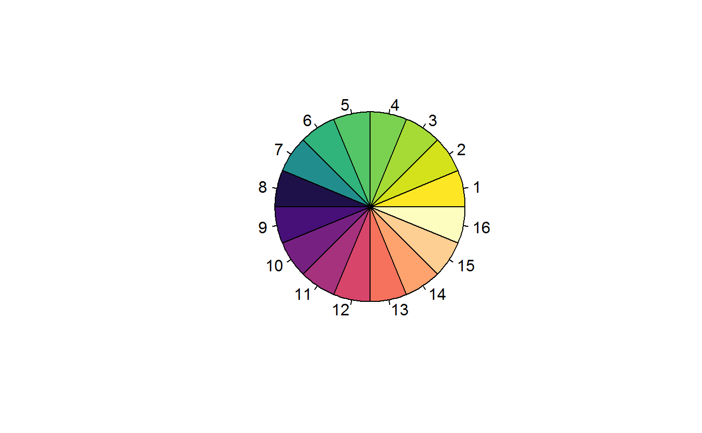
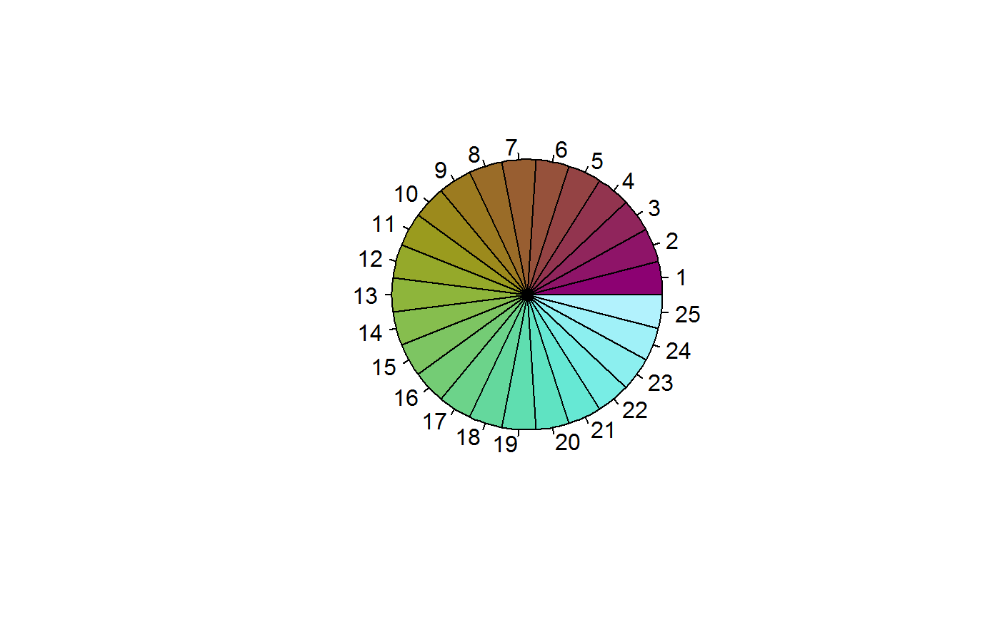
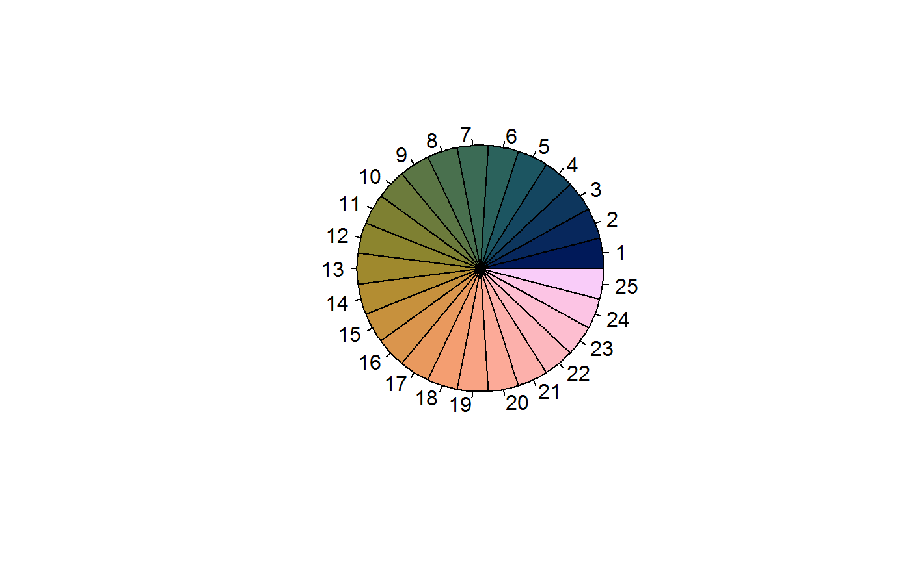
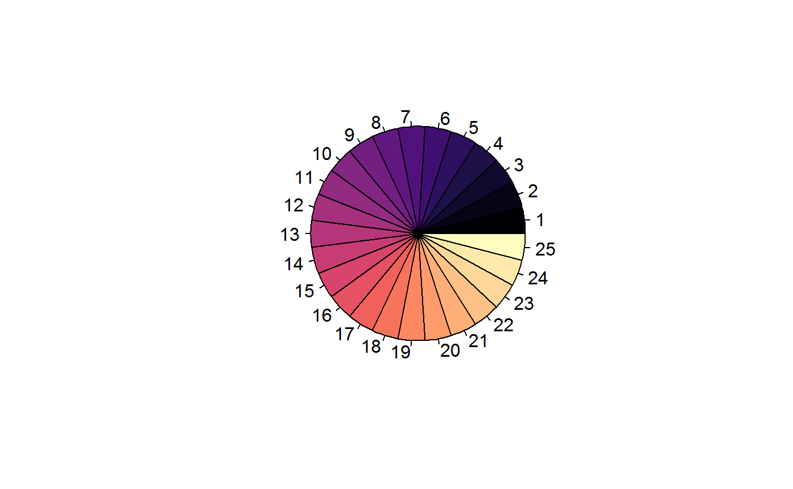
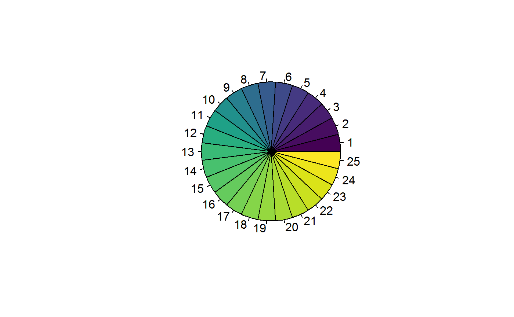
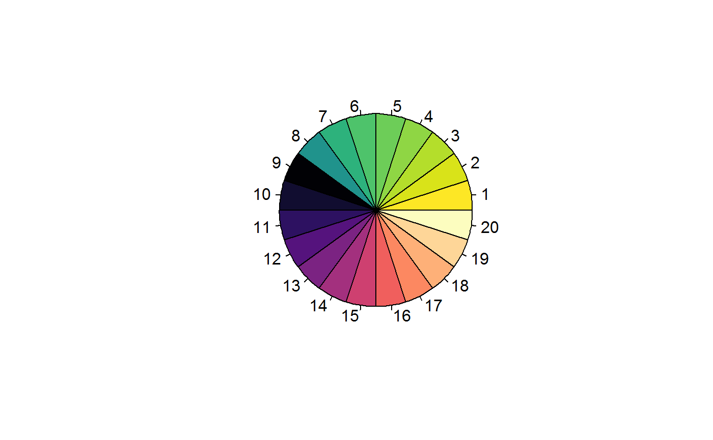

vignettes/color-palettes.Rmd
color-palettes.RmdThe color palette workflow created for MicrobiomeR are based on the get_color_palette(pal_func = ...) with a palette function that returns grDevices::colorRampPalette(...) (called), grDevices::colorRampPalette (not called), or a color palette function that returns a character vector. Several palette funcitons come built with MicrobiomeR and are used in the plotting functions.
Getting a color palette is simple. You can toggle the palette preview with display=FALSE.
analyzed_silva <- as_MicrobiomeR_format(MicrobiomeR::raw_silva_2, "analyzed_format")
data <- analyzed_silva$data$stats_tax_data$Phylum
data_len <- length(unique(data))
custom_pal <- get_color_palette(color_no=data_len)
We have built in support for the scico package.
basic_pal <- scico_palette(scico_palette="hawaii")(25)
pie(rep(1, length(basic_pal)), col=basic_pal)
print(basic_pal)
#> [1] "#8C0172" "#8E1468" "#90255C" "#92344F" "#944344" "#96513B" "#985E31"
#> [8] "#9A6C28" "#9C7B20" "#9C8A1C" "#9A9B1E" "#95A92A" "#8EB53B" "#86BE4E"
#> [15] "#7DC562" "#74CC75" "#6CD38A" "#64D89D" "#5FDEB0" "#5FE3C2" "#66E8D4"
#> [22] "#78EDE5" "#8CEFEF" "#A0F1F8" "#B2F2FD"
better_pal <- get_color_palette(pal_func = scico_palette, color_no = 25)
We also provide support for the viridis package.
Typically, you’d use the viridis palette like we do below.

print(basic_pal)
#> [1] "#000004FF" "#060517FF" "#100B2EFF" "#1D1147FF" "#2D1160FF"
#> [6] "#3F0F72FF" "#51127CFF" "#611880FF" "#721F81FF" "#822681FF"
#> [11] "#932B80FF" "#A5317EFF" "#B63679FF" "#C73D73FF" "#D8456CFF"
#> [16] "#E65164FF" "#F1605DFF" "#F8735CFF" "#FB8861FF" "#FD9B6BFF"
#> [21] "#FEAF77FF" "#FEC287FF" "#FED799FF" "#FDEAABFF" "#FCFDBFFF"With MicrobiomeR, the viridis palette can be optimized.
better_pal <- get_color_palette(pal_func = viridis_palette, color_no = 25)
pie(rep(1, length(better_pal)), col=better_pal)
Here is a useful functionality. Combining color palettes can help with situations where you need something more custom. This can be especially helpful if you are using more than 20 colors. The combination_palette function can take a dynamic number of arguments, must be named and the value must be a list. The list members can contain members with the following names:
You can use any name for your arguments, but the values must be a named list. palette: This is a palette function that returns a vector of colors. args: This is another named list used for the palette function parameters. range: This is a range (1:10) used to subset the color palette vector. rev: This is a logical (TRUE/FALSE)used to reverse the color palette.
# This is the code for MicrobiomeR::viridis_magma_palette, but
# it's also a useful example for understanding how this works.
viridis_magma_palette <- function(viridis_number = 800,
viridis_range = 300:viridis_number,
viridis_rev = TRUE,
magma_number = 500,
magma_range = 0:magma_number,
magma_rev = FALSE,
...) {
# Get the arguments for both functions
if (!missing(...)){
v_args = list(n=viridis_number, ...)
m_args = list(n=magma_number, ...)
} else {
v_args = list(n=viridis_number)
m_args = list(n=magma_number)
}
# Get combo palette
crp <- combination_palette(viridis =
list(palette = viridis::viridis,
args = v_args,
range = viridis_range,
rev = viridis_rev),
magma =
list(palette = viridis::magma,
args = m_args,
range = magma_range,
rev = magma_rev)
)
return(crp)
}
combo_palette <- get_color_palette(pal_func = viridis_magma_palette)